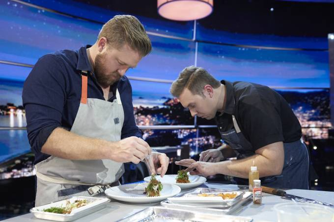

Notícias Sobre Culinária

Jacquin sobre Globo:
‘Querem imitar o MasterChef,
mas não conseguem’
Chef alfinetou 'Mestre do Sabor', nova atração culinária da emissora carioca, e ironizou comparações com Troisgros: 'Jacquin só existe um'.

Nina Horta,
colunista de gastronomia,
morre aos 80 anos
Autora escrevia para a Folha de S. Paulo desde 1987 e ganhou o Jabuti com o livro 'O Frango Ensopado da Minha Mãe'.

Claude Troisgros:
histórias de um chef francês
bem abrasileirado
Livro narra memórias do chef ao chegar no Brasil e revela truques culinários.

‘The Final Table’:
‘The Final Table’:
competição culinária da
Netflix é ‘MasterChef’
de luxo
Programa é superprodução com chefs renomados do mundo todo, mas não se arrisca a entregar algo novo para o espectador

Netflix anuncia reality
culinário com chef gaúcha
Helena Rizzo
Programa 'The Final Table' chegará ainda este ano à plataforma de streaming e contará com participantes de vários países